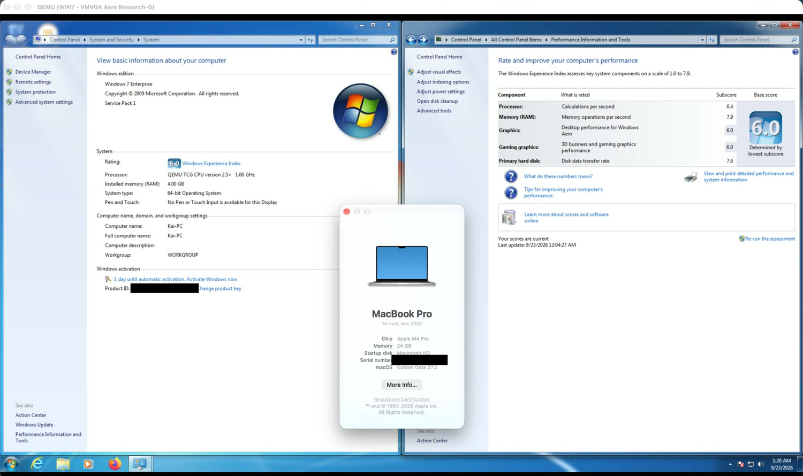
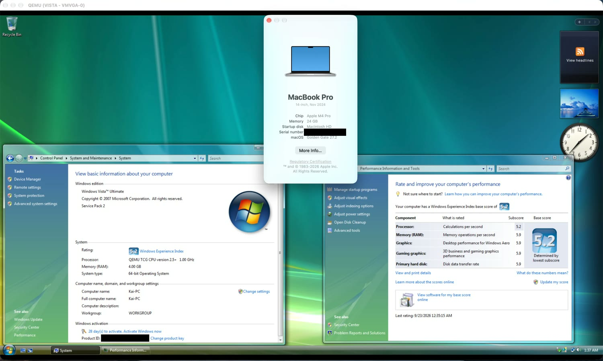
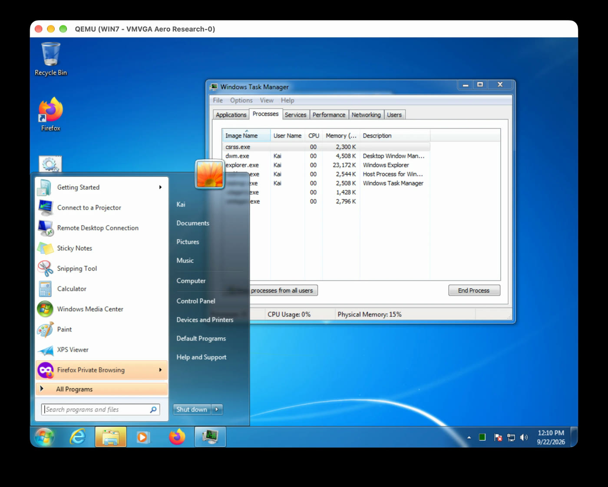
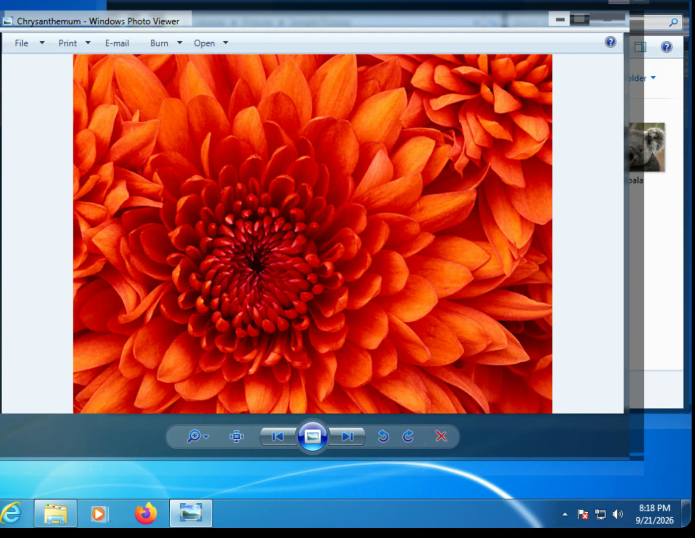

Algovista builds GPU-accelerated virtualization tooling that runs Windows 7 and Vista, with working Aero glass, on Apple Silicon Macs, and we're extending the same approach to OS X Mavericks.
View the project Get in touch



Apple Silicon Macs can't run x86 Windows natively, and most virtual machines on them either skip 3D acceleration for older Windows or lack it entirely. That leaves legacy software, classic games and preservation work without a good option. We're building the missing graphics layer so older Windows feels like a real desktop on a modern Mac, not a slideshow.
Transparency and Flip 3D rendering in full color inside the guest.
Graphics commands are translated to the Mac's native GPU.
Dynamic resizing, clipboard sharing and multi-core guests without VMware Tools.
Early and honest: it works, and it has limits.
Aero glass and Flip 3D, Direct3D 9 on the Mac GPU, Windows Experience Index scores of 5.9–6.0, and support for M1 through M4.
The x86 CPU is still emulated, so CPU-heavy work is slow. Frame copying can freeze the display at high resolutions. DirectX 10/11 is not supported.
3DMark06 runs slowly, around 9–27 fps, so heavy 3D workloads are not the target yet.
A patched QEMU emulates a VMware SVGA3D graphics device. Direct3D calls go through DXVK to Vulkan, then through MoltenVK to Apple's Metal.
We're applying the same approach to a second guest, OS X 10.9 Mavericks. Instead of writing a new guest driver, we emulate a graphics card that Apple already shipped a driver for (an ATI Radeon) and translate its command stream to Metal on the Mac. This is experimental and still has known rendering bugs.
Boots to the desktop under QEMU on Apple Silicon, with the emulated Radeon as the only display, a hardware cursor, and Finder windows rendering.
GPU work runs on its own thread, plus a fast path for plain copies. Boot is faster now that display-clock and vblank waits are emulated.
Bit-exact depth clears, mipmapped textures, anti-aliased shapes and icons, and the gamma-table hang when switching resolution.
Striped garbage during window animations, some missing Dock icons, and textures in some apps (for example Chess).
Claude is our primary engineering partner. We use it to write and refactor emulator and graphics-translation code, and to debug low-level issues across QEMU, Vulkan and Metal. We provide direction, testing and review.
Yes. You bring your own installation media and license. We don't distribute Microsoft or Apple software.
The code is public on GitHub. See the repository for its license and build instructions.
Apple Silicon Macs: M1, M2, M3 and M4.
Algovista is an early-stage, independent project by a student developer in the Philippines, known online as Kai.
Email: kirilenko@algovista.dev · GitHub issues